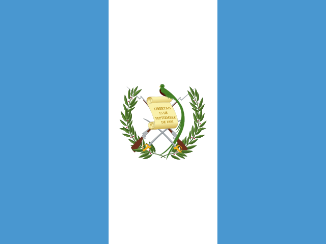

Countries › North America
Guatemala
Size, sea and borders
107,160 square kilometres (km²)102nd of 195
Sea area it controlsMarine Regions, World Exclusive Economic Zone (EEZ) version 12, 2023 · doi.org
110,695 km²97th of 191
CoastlineCentral Intelligence Agency (CIA) World Factbook, 2024 edition, 2024 · web.archive.org (cia.gov)
400 kilometres (km)104th of 193
Coastline for its sizeCIA World Factbook and World Bank (derived), 2024 · web.archive.org (cia.gov)
3,733 metres (m) per 1,000 km²99th of 192
1,667 km98th of 193, tied with 1
Number of land bordersGeoNames, 2026-08 · download.geonames.org
462nd of 195, tied with 21
Time-zone regionsInternet Assigned Numbers Authority (IANA) Time Zone Database 2026a, 2026 · raw.githubusercontent.com
129th of 195, tied with 166
Height and water
4,220 m39th of 194
Average elevationCIA World Factbook, 2024 edition, 2024 · web.archive.org (cia.gov)
759 m41st of 161
How much of the country is mountainsFood and Agriculture Organization statistical database (FAOSTAT), 2021 · bulks-faostat.fao.org
47.7%46th of 162
Biggest area of mountainsFAOSTAT, 2021 · bulks-faostat.fao.org
51,267 km²66th of 162
Farthest you can get from the seaNatural Earth (derived), 2026 · github.com
213 km121st of 192
How far the capital is from the seaGeoNames and Natural Earth (derived), 2026 · github.com
81 km85th of 192
No dataNot ranked
Rainfall a yearFood and Agriculture Organization (FAO), via World Bank, WDI, 2022 · data.worldbank.org
1,996 millimetres (mm)33rd of 179
Its own fresh waterFood and Agriculture Organization water database (AQUASTAT), via World Bank, WDI, 2021 · data.worldbank.org
109 cubic kilometres (km³)54th of 182
Fresh water per personAQUASTAT, via World Bank, WDI, 2022 · data.worldbank.org
6,118 cubic metres (m³)62nd of 180
Fresh water taken outAQUASTAT, via World Bank, WDI, 2022 · data.worldbank.org
3.3 km³76th of 178
Fresh water already used upAQUASTAT, via World Bank, WDI, 2022 · data.worldbank.org
5.7%114th of 175
Water going to farmingAQUASTAT, via World Bank, WDI, 2022 · data.worldbank.org
56.7%96th of 177
Industry's share of water useAQUASTAT, via World Bank, WDI, 2022 · data.worldbank.org
18.1%56th of 171
Land, forest and farming
33.6% of land95th of 192
36,016 km²83rd of 192
Old-growth forestFAOSTAT, 2025 · bulks-faostat.fao.org
No dataNot ranked
Forest planted by peopleFAO Global Forest Resources Assessment 2025, 2020 · bulks-faostat.fao.org
1,801 km²81st of 170
18,462 km²52nd of 136
Mangrove forestEuropean Space Agency (ESA) WorldCover 2021, via FAOSTAT, 2021 · bulks-faostat.fao.org
247 km²45th of 96
Open grass and tundraESA WorldCover 2021, via FAOSTAT, 2021 · bulks-faostat.fao.org
27.0% of the country59th of 194
Marsh and flooded grasslandESA WorldCover 2021, via FAOSTAT, 2021 · bulks-faostat.fao.org
273 km²100th of 186
Desert and bare rockESA WorldCover 2021, via FAOSTAT, 2021 · bulks-faostat.fao.org
0.2% of land139th of 194
0.8%68th of 194
Agricultural landFAO, via World Bank, WDI, 2023 · data.worldbank.org
46.0% of land71st of 189
17.5% of land61st of 190
Farmland per personFAO, via World Bank, WDI, 2023 · data.worldbank.org
0.10 hectares107th of 190
Orchards and plantationsFAO, via World Bank, WDI, 2023 · data.worldbank.org
11.0% of land26th of 189
Land used for grazingFAOSTAT, 2023 · bulks-faostat.fao.org
17.5%82nd of 181
People and cities
18,124,838 people68th of 195
Population densityWorld Bank, WDI, 2023 · data.worldbank.org
169 people per km²55th of 192
Population growthUnited Nations (UN) World Population Prospects 2024, via World Bank, WDI, 2023 · data.worldbank.org
1.5% a year74th of 194
How many times bigger than in 1950UN World Population Prospects 2024, 2023 · population.un.org
5.954th of 194
22.6 years137th of 195
72.6 years107th of 195
Years longer women live than menUN World Population Prospects 2024, 2023 · population.un.org
4.6111th of 195
Fertility rateWorld Bank, WDI, 2023 · data.worldbank.org
2.3 children per woman82nd of 194
21.9 per 1,000 people58th of 193
4.9 per 1,000 people170th of 193, tied with 3
Births per 1,000 girls 15-19UN World Population Prospects 2024, via World Bank, WDI, 2023 · data.worldbank.org
68.344th of 194
Average age at childbirthUN World Population Prospects 2024, 2023 · population.un.org
27.3 years175th of 195, tied with 1
Under-5 mortalityUnited Nations Inter-agency Group for Child Mortality Estimation (UN IGME), via World Bank, WDI, 2024 · data.worldbank.org
20.5 per 1,000 births73rd of 193
Dependants per 100 people 15-64UN World Population Prospects 2024, via World Bank, WDI, 2023 · data.worldbank.org
58.477th of 194
Share who are womenUN World Population Prospects 2024, via World Bank, WDI, 2023 · data.worldbank.org
50.4%90th of 194
People living in one homeUnited Nations Department of Economic and Social Affairs (UN DESA) Household Size and Composition, 2022 · un.org
4.838th of 152
Average adult's years of schoolUnited Nations Development Programme (UNDP) Human Development Report 2025, 2023 · hdr.undp.org
5.8160th of 192
Urban populationWorld Bank, WDI, 2023 · data.worldbank.org
55.6%119th of 195
Cities growingUN DESA World Urbanization Prospects 2025, via World Bank, WDI, 2023 · data.worldbank.org
2.2% a year73rd of 194
Capital populationUN DESA World Urbanization Prospects 2025, 2025 · population.un.org
2,837,70857th of 192
2,837,708 people68th of 175
Share living in the biggest cityUN DESA World Urbanization Prospects 2025 and World Bank (derived), 2025 · population.un.org
15.7%104th of 175
People born abroadUN DESA International Migrant Stock 2024, 2020 · data.worldbank.org
84,311132nd of 194
Share of people born abroadUN DESA International Migrant Stock 2024, 2020 · un.org
0.5%175th of 194
People living abroadUN DESA International Migrant Stock 2024, 2020 · un.org
1,282,66854th of 195
Share of its people living abroadUN DESA International Migrant Stock 2024, 2020 · un.org
7.4%73rd of 193
−8,940 people139th of 194
Economy and work
Total gross domestic product (GDP)World Bank, WDI, 2023 · data.worldbank.org
104.3 billion United States dollars (US$)67th of 188
GDP per capitaWorld Bank, WDI, 2023 · data.worldbank.org
5,754 US$104th of 187
3.5% a year82nd of 188
How expensive the country isWorld Bank, International Comparison Program (ICP) 2021, 2021 · datacatalog.worldbank.org
65.7 world = 10091st of 176
A day's healthy foodWorld Bank Food Prices for Nutrition, 2024 · datacatalog.worldbank.org
5.03 dollars a person36th of 159, tied with 1
Adults with a bank accountWorld Bank Global Findex 2024, 2024 · data.worldbank.org
38.3%123rd of 137
Natural resource incomeWorld Bank, WDI, 2021 · data.worldbank.org
1.9% of GDP91st of 183
Income from timberWorld Bank, WDI, 2021 · data.worldbank.org
0.7% of GDP63rd of 183
In work or lookingInternational Labour Organization (ILO), via World Bank, WDI, 2021 · data.worldbank.org
62.9%72nd of 179
Share of workers who are womenILO, via World Bank, WDI, 2023 · data.worldbank.org
32.6%153rd of 176
Unemployment rateILO, via World Bank, WDI, 2023 · data.worldbank.org
2.3%155th of 176
Young people out of workILO, via World Bank, WDI, 2021 · data.worldbank.org
3.8%166th of 179
Working for themselvesILO, via World Bank, WDI, 2023 · data.worldbank.org
39.5%79th of 176
Working in farmingILO, via World Bank, WDI, 2021 · data.worldbank.org
29.2%68th of 179
Working in industryILO, via World Bank, WDI, 2023 · data.worldbank.org
22.5%60th of 176
Farming and fishing
Cereal productionFAO, via World Bank, WDI, 2023 · data.worldbank.org
2,167,088 tonnes91st of 177
Grain per hectareFAO, via World Bank, WDI, 2023 · data.worldbank.org
1,822 kilograms (kg)126th of 176
Fertiliser per hectareFAO, via World Bank, WDI, 2023 · data.worldbank.org
197 kg38th of 184
641 tonnes117th of 122
2,080,000 tonnes47th of 167
507,389 tonnes63rd of 152
445,573 tonnes48th of 164
562,261 tonnes91st of 179
Chicken producedFAOSTAT, via Our World in Data, 2023 · ourworldindata.org
440,868 tonnes42nd of 184
Wild fish caughtFAO, via World Bank, WDI, 2024 · data.worldbank.org
14,208 tonnes135th of 194
25,773 tonnes58th of 194
4,277,17758th of 183
Cattle per personFAOSTAT, 2023 · bulks-faostat.fao.org
0.2459th of 183
3,023,57635th of 165
115,751118th of 176
No dataNot ranked
Sheep per personFAOSTAT, 2023 · bulks-faostat.fao.org
0.034118th of 172
Horses per personFAOSTAT, 2023 · bulks-faostat.fao.org
0.007354th of 141
Food supply
Food supplied a dayFAO Food Balance Sheets, via Our World in Data, 2022 · ourworldindata.org
2,781 kilocalories113th of 182
54.3 kg per person a year91st of 171
5.7 kg per person a year99th of 170
Poultry supplyFAO Food Balance Sheets, 2023 · bulks-faostat.fao.org
29.9 kg per person a year59th of 171
Fish & seafood supplyFAO Food Balance Sheets, 2023 · bulks-faostat.fao.org
3.8 kg per person a year150th of 171
83.0 kg per person a year97th of 171
12.4 kg per person a year46th of 171
36.8 kg per person a year134th of 171
10.1 kg per person a year120th of 170, tied with 1
82.7 kg per person a year7th of 168
21.5 kg per person a year99th of 171
Vegetable supplyFAO Food Balance Sheets, 2023 · bulks-faostat.fao.org
67.5 kg per person a year109th of 171
69.8 kg per person a year110th of 171
1.6 kg per person a year96th of 171
82.5 kg per person a year13th of 171
17.0 kg per person a year95th of 170
Energy and emissions
Electricity accessWorld Bank / Energy Sector Management Assistance Program (ESMAP), via World Bank, WDI, 2023 · data.worldbank.org
100.0% of people1st of 194, tied with 106
Electricity generatedUnited States Energy Information Administration, 2024 · eia.gov
858 kilowatt-hours per person127th of 184
Electricity lost before billingUnited States Energy Information Administration, 2024 · eia.gov
11.4%72nd of 186
Energy made at home per 100 usedUnited States Energy Information Administration, 2024 · eia.gov
20.8112th of 187
Electricity it generates from coalUnited States Energy Information Administration, 2024 · eia.gov
15.8%39th of 185
Electricity it generates from natural gasUnited States Energy Information Administration, 2024 · eia.gov
0%116th of 185, tied with 69
Electricity it generates from nuclearUnited States Energy Information Administration, 2024 · eia.gov
0%32nd of 185, tied with 153
Electricity it generates from hydroUnited States Energy Information Administration, 2024 · eia.gov
39.9%50th of 185
Electricity it generates from windUnited States Energy Information Administration, 2024 · eia.gov
2.4%67th of 185
Solar panel capacity per personUnited States Energy Information Administration, 2024 · eia.gov
5.5 watts133rd of 185
Crude oil pumpedUnited States Energy Information Administration, 2024 · eia.gov
5.8 thousand barrels a day78th of 186
Natural gas producedUnited States Energy Information Administration, 2024 · eia.gov
0.072 billion m³ a year76th of 187
Petrol sold per personUnited States Energy Information Administration, 2024 · eia.gov
148 litres a year91st of 185
Carbon dioxide (CO₂) per capitaGlobal Carbon Project, via Our World in Data, 2023 · ourworldindata.org
1.1 tonnes135th of 192
Transport
5878th of 189
Highest airport you can fly toOurAirports, 2026 · davidmegginson.github.io
2,371 m12th of 187
17,440 km115th of 188
Road per 100 km² of landCIA World Factbook and World Bank (derived), 2024 · web.archive.org (cia.gov)
16.3 km126th of 187
800 km94th of 132
Railway per 1,000 km² of landCIA World Factbook and World Bank (derived), 2024 · web.archive.org (cia.gov)
7.5 km72nd of 131
990 km70th of 118, tied with 1
Ships registered under its flagCIA World Factbook, 2024 edition, 2024 · web.archive.org (cia.gov)
9145th of 162, tied with 1
Football and chess
Football internationals played, all timeInternational football results (martj42), 2026 · github.com
55467th of 193
Share of home football internationals wonInternational football results (martj42), 2026 · github.com
54.3%56th of 183
All-time football goal differenceInternational football results (martj42), 2026 · github.com
1179th of 193
Different football opponents facedInternational football results (martj42), 2026 · github.com
54121st of 193, tied with 4
Years since its first football internationalInternational football results (martj42), 2026 · github.com
10533rd of 193, tied with 5
Living chess grandmastersWikidata, 2026 · query.wikidata.org
091st of 194, tied with 103
Rank counts from the highest value among the countries that have data: 1st is the most. Ties share a rank. Data version 91, 22 November 2026.
Sort Guatemala against four others
The game has figures for Guatemala on 184 of its 190 questions.
The same game for Android and iOS. It launches on 10 December 2026.
Out now.